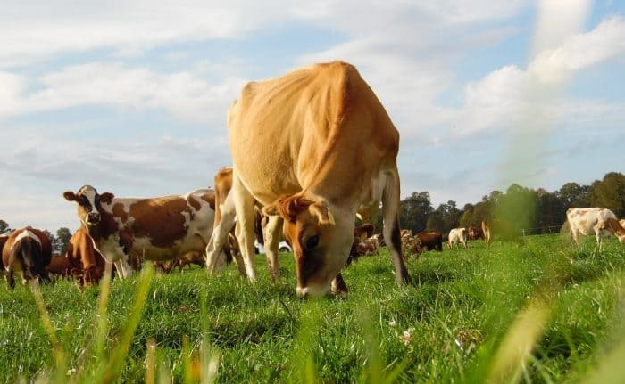

Tipos de Ganado
Feedlot
Desde el punto de vista del consumidor, la carne de Feedlot es más tierna y tiene mayor concentración de grasa intersticial (marmóreo) que hace que el producto sea más tierno. Esto es porque el animal de Feedlot crece a una tasa de ganancia de peso mayor. Con una dieta energéticamente más concentrada.
Grassfed
El término Grass Fed es cada vez más utilizado y hace referencia a la carne de animales que son criados con pasturas y que no se les alimenta con granos, su carne no contiene hormonas, antibióticos, conservadores u otros químicos.
Angus
Proviene de Escocia y tiene una particularidad que la diferencia del resto de razas bovinas autóctonas, su alto grado de marmoración. Es decir, contiene una elevada cantidad de grasa infiltrada en su músculo, que la dota de una jugosidad especial, así como de un sabor intenso y muy característico.
Hereford
Proviene de Inglaterra, su tamaño varía desde mediano a gran tamaño y su peso puede variar desde los 450 y 480 kilogramos, dependiendo su alimentación. Su altura puede llegar a alcanzar los 1,5 metros. Su calidad de carne es excelente. Se ha realizado su importación en Uruguay por primera vez en el año 1899.
Cuidados
En nuestro frigorífico, nos comprometemos a garantizar el bienestar y la salud de todo el ganado que llega a nuestras instalaciones. Para lograrlo, seguimos estrictos protocolos de cuidado y manejo que cumplen con las normativas de bienestar animal. Antes de la llegada al frigorífico, el ganado es transportado en condiciones óptimas, evitando el estrés y asegurando su comodidad. Al llegar, se les proporciona acceso a agua fresca y se les alimenta según las necesidades nutricionales adecuadas para su especie y estado fisiológico. Durante su estancia en nuestras instalaciones, nos aseguramos de que el ganado esté en un ambiente tranquilo y confortable. Se evita cualquier situación que pueda causarles estrés, como ruidos fuertes o aglomeraciones. Además, nuestro personal capacitado supervisa constantemente la salud y el bienestar de los animales. Cualquier indicio de enfermedad o malestar se trata de inmediato por profesionales veterinarios. En el momento del sacrificio, se realiza de manera rápida y humanitaria, siguiendo los estándares más altos de bienestar animal. Posteriormente, los cuerpos son manipulados con cuidado y respeto, garantizando la calidad y seguridad de la carne.